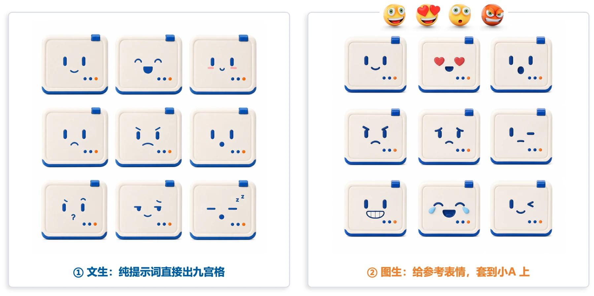
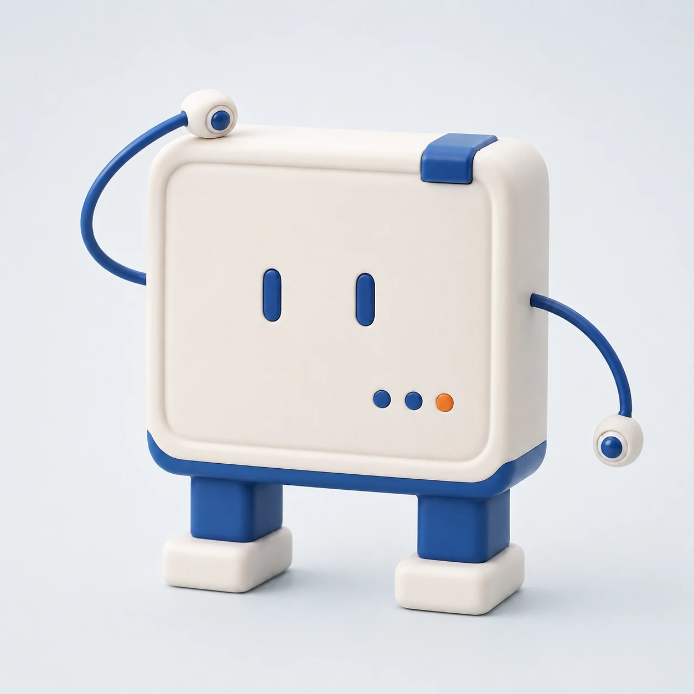
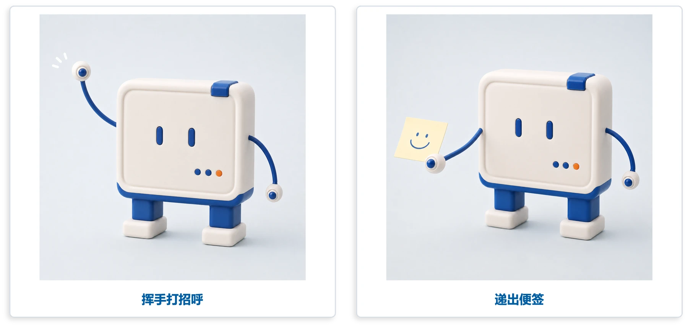
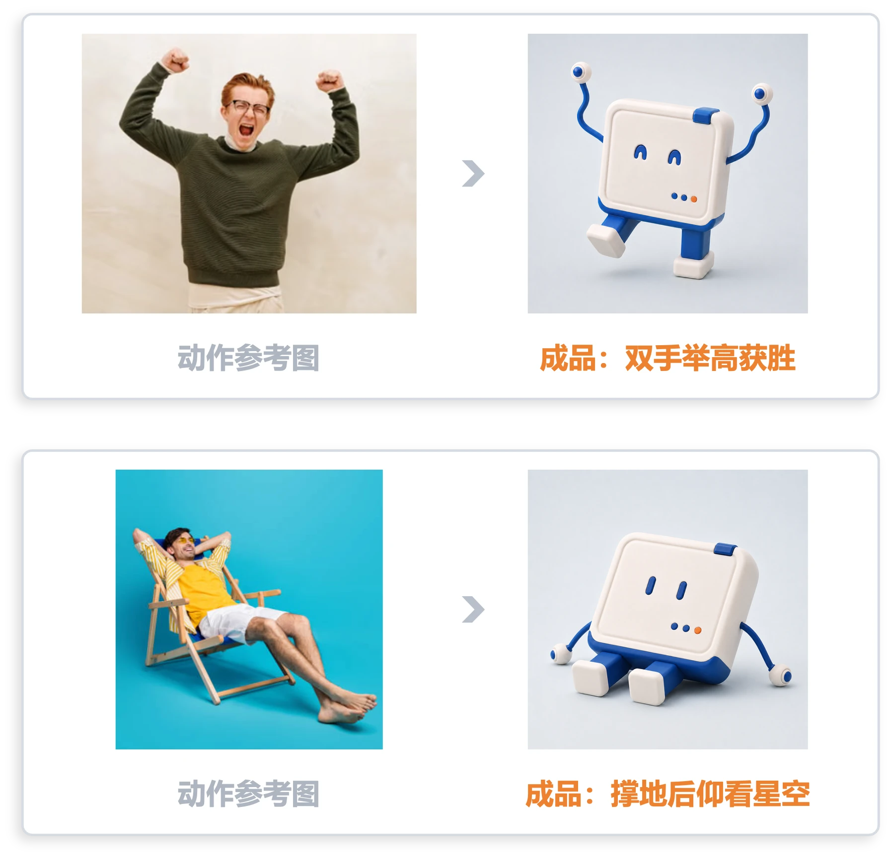
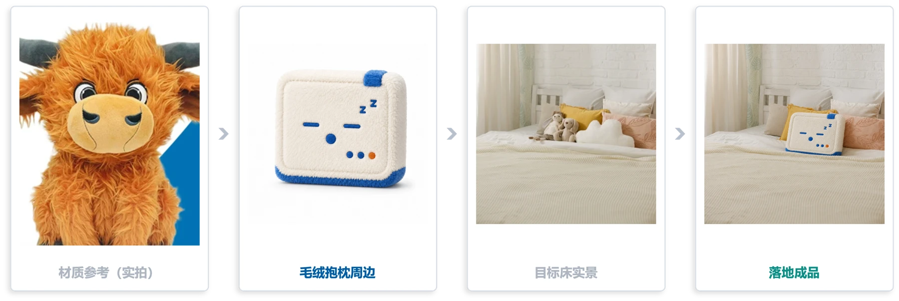
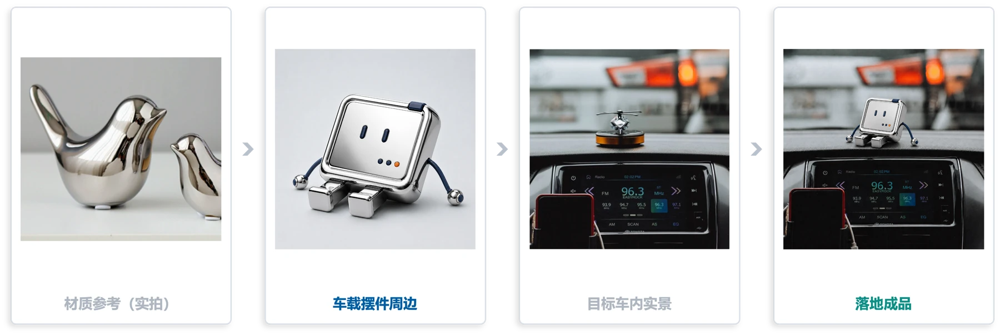
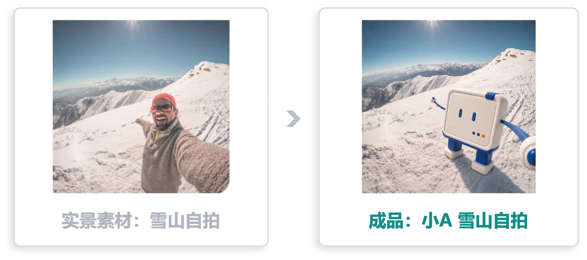
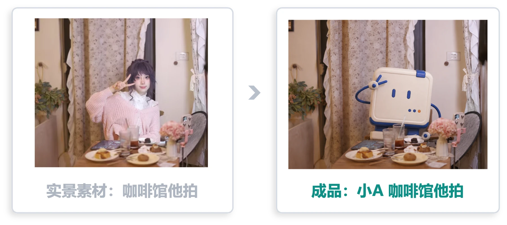

第一部分｜延展的共同逻辑
01｜定妆照不够用
上一课定好了小A 的样子，这一课要让它适应真正的使用场合。
定稿和三视图说清了“它长什么样”，使用时还会遇到新需求：朋友圈需要表情和动作，周边需要材质效果，客户需要看它摆在现场的样子。只靠一张定妆照还不够。
我们就沿着这些需求，把同一个形象延展成会表达、能做动作、能展示落地效果的素材。
02｜四个延展方向
以同一张 IP 底图为起点，我们分别做四类素材。
① 表情包 把喜怒哀乐画在 IP 脸上，用于聊天和互动。
② 动作延展 从站立扩展到挥手、递便签等姿态，用身体动作表达意图。
③ 材质与实景图 先做毛绒、陶瓷等材质的周边效果图，再放进真实场景，预览成品可能的使用效果。
④ 活人感打卡照 把实景照片里的人换成 IP，保留原有的背景、光影和现场感，让它像亲自到场一样自然。
四类素材改变的东西不同：表情和动作表现角色正在做什么；材质与实景展示周边会是什么样；打卡照让角色参与现场。这些素材合起来，才方便在不同场合调用。
03｜锁造型，改变量
先固定“它是谁”，再说明这一张图要改什么。
四套方法有共同的起点：用参考图固定造型，再用文字说明本次变化。表情、动作或材质，一次先改一项，偏差也更容易查。
锁定的部分：机身比例、奶白方盒配色、屏幕脸双眼、二足短腿、连接方式。每次出图都带上这组要求，生成后也用它们检查角色有没有变。
改变的部分：表情、动作、材质、所处场景。一次只改一个。
确认结果仍符合原设定，再存为下一步的基准图。比如先定好伸臂态，后续动作就有了更具体的手臂参考。
第二部分｜让 IP 会表达、能动
04｜表情包
只留一张盒子脸
表情包先把注意力集中在盒子脸上。
这一版只保留机身，去掉腿脚和手臂。屏幕脸成为画面重点，喜怒哀乐就通过脸上的变化来表达。
输出规格固定：1:1 白底九宫格，3×3 九种表情，同一个 IP 只改表情、不改结构。
两条路：文生与图生
想探索情绪，用文字描述；已有想模仿的表情，就再加参考图。
两种做法都先上传小A 的角色图，区别是表情要求从哪里来：
① 文生：角色仍有参考图，表情则只用文字安排，适合探索不同情绪。
② 图生：额外上传表情参考图，让 AI 把对应情绪套到小A 上。

表情包：文生与图生对照
多出几版再挑
先要数量，再从数量里挑。
一张九宫格里，可能有个别表情不清楚或造型走样。可以多生成几版，再挑出情绪易读、角色一致的格子。
一版九张，出几版就有几十个表情可选。
挑好后，把每一格单独裁出来，让表情成为画面中心，就能作为单张表情包使用。
05｜表情包提示词
让 AI 只改变表情，其他要求保持一致。
以〔角色图：小A〕为唯一基准锁定造型，只保留机身、不要腿脚手臂；生成 1:1 白底九宫格（3×3，同一 IP 只改表情、不改结构）；背景纯白、排版整齐。
06｜动作延展
先立伸臂态
要挥手、递便签，先给小A 定一套合适的手臂。
先生成伸臂态并确认手臂形态，后续动作都参考这张图。手臂要满足三点：
- 从机身中部长出，连接处光滑无过渡
- 可伸缩、纤细，弱化存在感
- 非人形手掌，不用五指的手

动作基准：伸臂态设定
以小A 为基准锁定机身比例，长出手臂。从机身中部长出、可伸缩、非人形手掌、纤细、连接光滑无过渡。
这一步只重新定义手臂，其余角色特征沿用原设定。手臂定型后，后续改变动作，不再随意改手臂设计。
两种做法与边界
动作容易说清，就直接描述；幅度和姿态难讲清，就加参考图。
① 纯提示词：直接描述动作，造型交给伸臂态基准图。
② 动作参考图加指令：同时上传伸臂态基准图和姿态参考图，再补一句具体的动作描述。
边界：小A 是二足短腿，蹲下、大跨步这类腿部大幅动作与设定冲突。参考图尽量选比例接近的姿态，避免硬套长腿人物动作。
实例：纯提示词
造型写死在提示词里，只留动作一句在变。
看下面两张：固定造型要求，只替换动作描述，就分别得到了挥手和递便签。

动作：挥手打招呼与递出便签
以小A 伸臂态的参考图为造型基准，严格保持设计 100% 统一：白色盒状机身、圆角方形屏幕脸 + 深蓝双眼、二足短腿、可伸缩短手。机身比例，腿的长度，严格遵照设定。生成图的动作：〔打招呼 / 递出便签〕。
这组结果中，“打招呼”对应挥手，“递出便签”对应拿着便签。复用时保留前面的造型设定，只改最后的动作，再检查姿态是否符合要求。
实例：参考图引导
姿态参考可以补足动作描述，尤其是手脚的位置与幅度。

动作：从参考图到成品
以小A 伸臂态的参考图为造型基准，生成与动作参考图完全一致的小A；动作：复刻参考图姿态，〔补充动作描述〕；纯白背景。
「〔补充动作描述〕」换成下面任一条，就是图里的两个成品：
- 动作补充描述1（双手举高获胜）：双手举高表达获胜的兴奋，一只脚离地身体摇晃，手臂像参考图一样有折回的弯曲，表情要表达兴奋。
- 动作补充描述2（撑地后仰看星空）：身子后仰像是仰望星空，手撑在身后，不要撑在身体两旁。
第三部分｜让 IP 落地
07｜材质与实景图
用厂家实拍图定质感
想让毛绒或陶瓷更具体，就给 AI 一张材质实拍图。
“毛绒”“陶瓷”这类词不够具体，可以从 1688 厂家实拍图中选一张质感明确的产品照片作为材质参考。
角色参考用 IP 三视图，让 AI 同时看清正面、侧面和背面的造型与配色。
把周边放进真实场景
周边长什么样定好了，还要看它放在现场是否合适。
做出周边效果图之后，再走一步：把周边放进真实场景。
尽量用接近目标现场的照片，讨论才有共同依据。把方案与效果图一起交给客户，让对方预览周边摆在现场的样子，再判断是否符合需求。
案例一：毛绒抱枕
用下面四张图，看看抱枕的落地效果怎样一步步得到。
依次是材质参考、周边效果、目标实景和置入后的效果图。毛绒质感来自厂家实拍图，角色配色则沿用小A 的设定。

案例：毛绒抱枕落地链路
案例二：车载摆件
沿用同一套流程，换材质和场景，探索另一种周边效果。
银色陶瓷车载摆件沿用同一流程，材质参考从毛绒换成金属质感的陶瓷，目标实景从床换成车内。这个例子还把外观改成银色，需要在材质替换时写明颜色要求。

案例：车载摆件落地链路
08｜落地提示词
材质替换
把材质照片交给 AI，造型配色都不动。
把 IP 三视图作为图一、材质实拍图作为图二。下面的通用提示词适用于保持原造型与配色的任务；银色摆件这类改色案例，需要另写颜色要求。
图一是我的〔IP〕，图二是参考材质（1688 厂家实拍图），生成该材质的效果图，保持造型配色不变。
换成树脂、玻璃钢、不锈钢或充气材质时，沿用这段描述，替换图二的材质照片。图一继续用三视图，让 AI 同时参照角色三个方向的造型。
实景效果
周边做完，再让它进一次真实场景。
图一是我的卡通 IP〔周边，如毛绒抱枕 / 车载摆件〕，将它放入图二的实景。
想放到床上、车内或货架，就替换图二的场景照片。图一用已经确认的周边效果图：先换材质，再放进实景，两步接起来就得到可讨论的落地预览。
09｜活人感打卡照
把照片里的人换成小A
这次让小A 走进现成的实景照片。
任务是把真实照片里的人换成小A，同时尽量保留原有背景、光影和现场感。
这类照片适合文旅打卡、品牌线下联动，让 IP 成为现场活动的参与者。
实例：两种实景
先看同一段提示词怎样用在两种场景里。
同时上传实景人物照片和小A 的角色参考图，再使用下面的提示词。
保留参考图的背景光影构图不变，把人物换成小A（二足技能盒、屏幕脸双眼、可伸缩手、非人类手掌），模仿原动作，光影自然融合。

置入实景：雪山自拍

置入实景：咖啡馆他拍
让小A 融进画面
角色特征要写清，姿态和光影也要与现场对得上。
写明小A 的辨识特征：二足技能盒、屏幕脸双眼、可伸缩的手、非人类手掌。出图后对照原照片，检查动作与现场光影是否自然。
避坑：不要找复杂动作、长腿的人物参考图，和小A 的二足短身冲突。
小结
- 表情包：做出会变表情的盒子脸九宫格，IP 才算有了自己的情绪。
- 动作延展：先立伸臂态，再往外扩动作库，同一张脸能演各种戏。
- 材质与实景图：用材质参考做周边效果，再放进真实场景，带着落地方案一起交付。
- 活人感打卡照：沿用角色特征，选择适合它的动作与照片，持续扩展可用场景。
选一个自己的使用场景练习：先确认角色特征，再改变一项需求，让检查通过的结果成为下一步的起点。